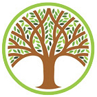

Upcoming Events
Stay informed about what's happening in our community! Check out this page for the latest updates on upcoming events, important meetings, and ways to get involved. Don't miss out and stay connected with your Presidio Heights neighbors today!

PHAN's Annual Meeting will take place on Wednesday, September 2. Come to see and meet fellow neighbors and to hear from city and community leaders.
The meeting will be held at the Presidio Golf & Concordia Club. This is NOT the clubhouse for the Presidio Golf Course. Directions to the Presidio Golf & Concordia Club can be found here.
The evening's featured speakers will be:
Dan Safier, President & CEO of Prado Group — Mr. Safier will be providing updates on the real estate developments at 3333 California Street and 3700 California Street.
District 2 Supervisor Stephen Sherrill — Our Supervisor will discuss his priorities for the district.
The Annual Meeting will be moderated by broadcast journalist and Presidio Heights resident, Jan Yanehiro.
It is FREE to attend this meeting and everyone in the neighborhood is welcome.
Please register here in advance so that PHAN knows that you are coming!